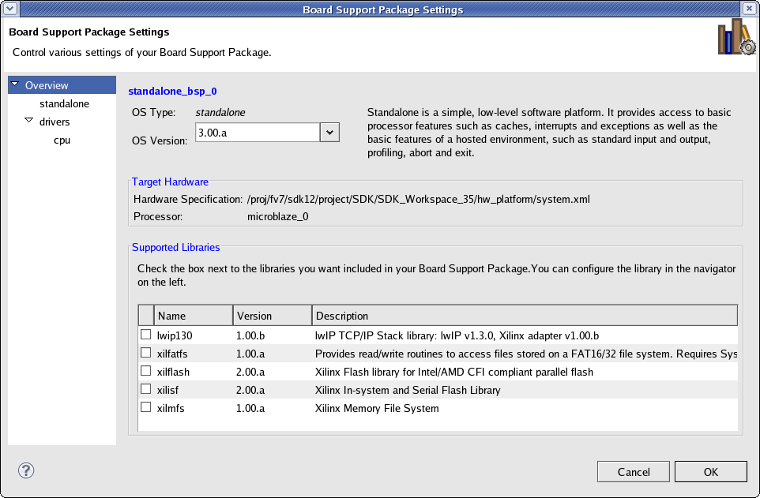
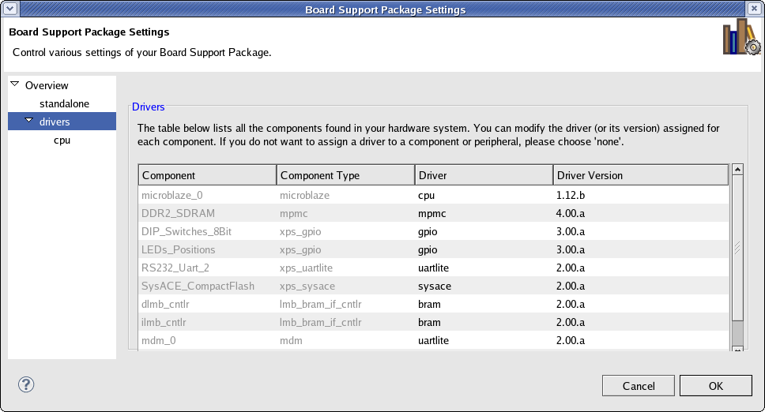

In the Board Support Package Settings dialog box, you can select the drivers and libraries to use in the board support package for SDK and configure their parameters. To open this dialog box, select Xilinx Tools > Board Support Package Settings.

Use the Board Support Package Overview page of the Board Support Package Settings dialog box to customize the OS and libraries options.
The Board Support Package Overview page contains the following functions:
| Name | Function |
|---|---|
| OS Type | Specifies the type of board support package. |
| OS Version | Select the version of board support package. |
| Support Libraries | Displays the details for the Libraries. |
Use |
Click to select Library checkboxes to include libraries in the software platform. |
Name |
Displays t he name of the library. |
Version |
Displays the version of the library. |
Description |
Displays the description of the library. |
On the Board Support Package Settings page, you can change the parameters of the OS and its constituent libraries, including the functions listed below.
| Name | Function |
|---|---|
| Name | Displays the name of the Parameter. |
| Value | User specified value. Contains the default value (as specified in the Default column) if not specified otherwise. |
| Default | Default value of the parameter. |
| Type | Parameter value type, such as string, integer, bool, array, or peripheral_instance. |
| Description | Description of the parameter. |

The Drivers page contains the following functions:
| Name | Function |
|---|---|
| Peripheral | Name of the hardware peripheral. |
| HW Version | Version of the hardware peripheral. |
| Instance | Name of the hardware peripheral instance. |
| Driver | Name of the software driver used. If you don't want to include this peripheral in the software platform, select "none" as the driver name. |
| Version | Version of the software driver used. |
The Drivers page lists all the device drivers assigned for each peripheral in your system. You can select each peripheral and change its device driver assignment and its version. If you want to remove a driver for a peripheral, assign the driver to none.
Some device drivers export parameters that you can configure. If a driver in the driver list has parameters, it is listed in navigation pane on the left and you can configure them by clicking on the driver name
The Driver configuration page lists all the driver parameters that you can configure. To change a parameter, click on the corresponding Value field and type the new setting.

The Driver Configuration area of the Board Support Package Settings page contains the following functions:
| Name | Function |
|---|---|
| Configuration for driver | Specifies the name of the CPU driver. |
| Parameters | Displays a list of parameters for the driver. |
Name |
Name of the Parameter. |
Value |
User specified value. If you do not specify a value, this field contains the default value (as defined in the Default column) . |
Default |
Default value of the parameter. |
Type |
Parameter value type, such as string, integer, bool, array, or peripheral instance. |
Description |
Description of the parameter. |

Configuring a board support package (SDK)

New Board Support Package (SDK) Project dialog box
Copyright © 1995-2010 Xilinx, Inc. All rights reserved.